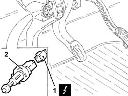

1056B78 SWITCH ON CLUTCH PEDAL - R.R.
- Path
- Procedures > 10 ENGINE UNIT > 1056 PETROL INJECTION SYSTEM > 1056B MULTI-POINT INJECTION SYSTEM (MPI) > 1056B78 SWITCH ON CLUTCH PEDAL - R.R.
- Kind
- repair procedure (removal / refitting; the operation number is the code)
- Applies to
- engines: 1.8 T.SPARK, 3.2 V6; all production periods
- Interactive page
- https://sloeber94.github.io/elrnDB-aGt/en/#/125002606
Applies to: engines: 3.2 V6; all production periods
 Removing
Removing
 Refitting
RefittingEnsure that the ignition key is in the OFF position, then disconnect the negative battery terminal (-).
Name | Connector | |
|---|---|---|
- | Battery |
1. Disconnect the electrical connection from the switch on the clutch pedal.
Name | Connector | |
|---|---|---|
1 | Clutch pedal switch |
2. Turn the switch clockwise through 90 degrees and remove.

Applies to: engines: 3.2 V6; all production periods
Refitting
RemovingPress the clutch pedal, then refit the clutch pedal switch and turn through 90 degrees anticlockwise until it clicks home on the detent ridge.
Release the clutch pedal and pull back to the end of its travel (rest position).
Press the clutch pedal through its full travel to allow the switch to settle.
Connect the electrical connection to the switch on the clutch pedal.
Connect the negative (-) battery terminal
Applies to: all engines; all production periods
Removing
RefittingEnsure that the ignition key is in the OFF postition, then disconnect the battery negative terminal.
Name | Connector | |
|---|---|---|
- | Battery |
1. Disconnect the electrical connection from the switch on the clutch pedal.
Name | Connector | |
|---|---|---|
1 | Clutch pedal switch |
2. Turn the switch clockwise through 90 degrees and remove.
Applies to: all engines; all production periods
Refitting
RemovingPress the clutch pedal, then refit the clutch pedal switch and turn through 90 degrees anticlockwise until it clicks home on the detent ridge.
Release the clutch pedal and pull back to the end of its travel (rest position).
Press the clutch pedal through its full travel to allow the switch to settle.
Connect the electrical connection to the switch on the clutch pedal.
Connect the battery terminal (-).